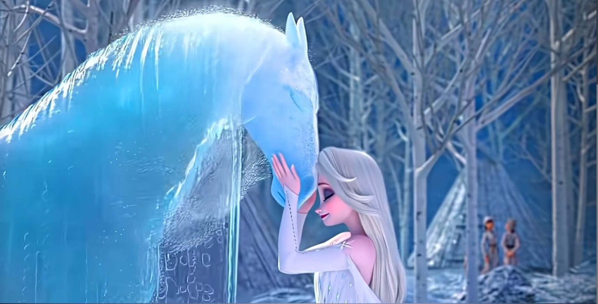

这是一首关于“整合与自我接纳”的歌，与《Let It Go》的“反抗与独立”形成对照：前者是对世界宣告“我不在乎”，后者是与自我对话、寻找归属。艾莎起初把声音当作外部的存在（“你就是我一生寻找的人吗？”），最终在母亲歌声的引导下领悟“你就是那个你一直等待的人”——答案不在外界，而在自己体内。它关乎理解过去、血脉与力量，最终成为“第五元素（Fifth Spirit）”。
🎬 在电影中的作用
穿越暗海为抵达阿塔霍兰，她乘水灵 Nokk 迎风破浪——越是贴近答案，越要独自涉过最深的未知。

驭水之灵 · 记忆之河水是不息的记忆，艾莎的魔法在阿塔霍兰与河流共鸣，也照亮了她真正的来历。
是全片叙事谜题的解答时刻：一直呼唤艾莎的“声音”正是母亲伊杜娜的记忆与爱。艾莎进入冰川、与母亲隔空对唱，确认自己力量的来源（母亲为救父亲 Agnarr 的自我牺牲），并完成为“第五元素”的身份转变。歌曲采样了开篇伊杜娜的摇篮曲式曲目《All Is Found》，在结构上首尾呼应、统一全片。
🌱 来源与创作灵感
据 Disney+ 纪录片《Into the Unknown: Making of Frozen 2》，导演 Jennifer Lee 最终拍板“声音就是母亲”，并召回 Evan Rachel Wood 补录对唱声部。制作过程中团队一度考虑删掉本曲、改用《I'm Home》，所幸在内部试映（Story Trust）中获得好评而保留。Lopez 夫妇随后为艾莎新增了首段歌词“Are you the one I've been looking for?”，使揭示更清晰。
🛠️ 制作过程
由 Kristen Anderson-Lopez 与 Robert Lopez 创作，并与 Dave Metzger、Tim MacDougall 共同制作。配乐由 Christophe Beck 操刀：歌曲从稀疏的钢琴与弦乐起头，随艾莎信心增长逐步叠加合唱、铜管与打击乐，趋向交响终曲般的磅礴。Idina Menzel 的演唱从脆弱气声过渡到充满喜悦与平和的强声。片中被《Into the Unknown》的四音“Ah-ah-ah-ah”动机贯穿，在此与 Wood 的声部交织，象征母女合一。
🔍 解析与评价
许多乐评与观众认为《Show Yourself》才是全片真正的情感顶点与“精神国歌”，其冲击力甚至超过作为奥斯卡提名的《Into the Unknown》。它被解读为对自我认同、接纳独特之处的强有力隐喻，并在 LGBTQ+ 群体中产生深切共鸣。Anderson-Lopez 曾提到，首映试映时她 14 岁的女儿听后落泪，说“这像在告诉我可以跟随直觉、找到自己的路”。
🌍 文化影响与获奖
随 2019 年 11 月 15 日原声带发行。原声带获 2020 年格莱美“最佳影视媒体合辑”提名；《Into the Unknown》获格莱美“最佳影视媒体创作歌曲”提名及奥斯卡最佳原创歌曲提名（迪士尼在发行前即提交《Into the Unknown》，故《Show Yourself》未获奥斯卡 song 提名）。本曲获 2019 年 DFCA（DiscussingFilm Critic Awards）“最佳原创歌曲”奖，并获 ACCA、HFCS 等多个“最佳原创歌曲”提名。
五、差点被剪掉的一首歌：钩子的争论与三重对位
（一）官方设定与创作方的公开表述：它在上映前八个月差点被剪掉
据 Disney+ 幕后纪录片《Into The Unknown: Making Frozen 2》，这首被不少乐评视为《Frozen II》里艾莎最好的一首歌，却差点没能进成片。故事总监 Marc Smith 提到，在距上映约八个月、影片送 Story Trust 审看时，他的判断是“我觉得我们还没找到理由把它留下来”，并形容当时的状态像“病人已经躺在手术台上，我们还剩最后一次机会把他救回来”
（来源：ScreenRant, 2020-06-29 引 Disney+ 纪录片）。
问题不在旋律，而在“这个声音到底是谁”这件事本身没定论。据同一部纪录片，团队当时对“那个呼唤艾莎的声音”至少有三种理解：是阿塔霍兰本身？是艾莎的母亲？还是艾莎自己的声音？Jennifer Lee 自己也承认“我们各有各的看法”
（来源：同上）。这三条解释会导向完全不同的歌曲。
Jennifer Lee 提出的替代方案几乎推翻了整首歌：“如果这首歌是”I'm home“而不是”show yourself“呢？我就是觉得这个钩子不对……钩子一改，整首歌就得改。”Chris Buck 也同意这歌当时不成立，他的说法是“它在情感上说不通。我感受不到任何东西。”而 Lopez 夫妇反对这个方向——Kristen 认为 “I'm home”会和《Let It Go》太像；Robert 认为如果艾莎走到冰川前突然意识到“那不是一个人、是一片冰川”，“这说不通”
需要说明的是，本页不重复基准页已经写过的“阿塔霍兰是什么”与“摇篮曲互文”，只补一个结构性观察：母亲这条线与本部片是同一条线，不是新开的线。歌词自己给出了钥匙：第一主歌里艾莎唱到“Something is familiar / Like a dream I can reach but not quite hold”（有什么很熟悉，像一个我几乎够得到却抓不住的梦）——“熟悉”而不是“未知”
。
更有意思的是歌词里出现了一个与《All Is Found》完全同源的表述。在伊杜娜开口之前，艾莎唱的是“I'm arriving, it feels like I am home”（我到了，感觉像回了家）。这句“到家”是摇篮曲里那句 “homeward bound”（归家而去）的回声——一个北地母亲在摇篮曲里对女儿说的话，在女儿长大后成了她踏入未知时的第一个感受。换句话说，艾莎这一路之所以能走通，是因为她要找的东西其实一直很熟悉
结构上最值得称道的是尾段：艾莎、海妖（Evan Rachel Wood 饰母亲）、以及《All Is Found》旋律的复现同时进入，形成三重对位。配乐分析对这一刻的评价相当高——称 3 分半处 Evan Rachel Wood 唱回《All Is Found》的歌词、与 Menzel 构成对位、再加上海妖的呼唤，是“三重对位，很有说服力的音乐成就”，并把《Show Yourself》评为该片最有说服力的一首
（来源：Movie Music UK, 2019-12-10）。
这个结构决定了歌词的读法。同一句 “You are the one you've been waiting for”出现了两次，但说话的人换了：第一次是艾莎在问那个声音（“你是我等了一辈子的那个人吗”），第二次是母亲在回答（“你就是你等了一辈子的那个人”）。问句与答句用的是同一句歌词
——这是全曲最精密的一处结构。
而在整首歌的最后一次副歌里，“Show yourself”的含义完成了彻底反转：开篇艾莎是对一个外部的、未知的存在说“显现吧”；结尾则是母亲对她说“展现你自己”，而她终于可以答上一句 “I am found”（我已寻得）——把《All Is Found》的句式原样接了过来。所以这支歌真正的动作不是“找到别人”，而是“被认领”
。
还有一个音乐层面的呼应常被漏掉：《Show Yourself》与《Let It Go》共用一处旋律骨架。乐评指出，艾莎在《Let It Go》里唱“the wind is howling like this swirling storm inside”（风在我心里呼啸如暴风雨）与她在《Show Yourself》里唱“I have always been a fortress / Cold secrets deep inside”（我一直是一座堡垒 / 冰冷的秘密藏在深处）用的是同一段旋律，两句都在讲同一样东西：她内心的冲突
（来源：LA Times 校园报观点文章 · 逐句对照）。《纽约时报》也把它与《Let It Go》的主题（自我接纳）直接相提并论（来源：Wikipedia《Show Yourself (Frozen 2 song)》条目引《纽约时报》）。
这支歌之所以比《Let It Go》更难被记住，却更完整，是因为它做的不是同一件事。《Let It Go》是艾莎第一次自己决定成为什么；《Show Yourself》是艾莎被回答了“你早就是什么”